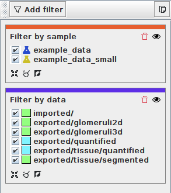

Browsing quantification results
MISA++ applications store quantification results in a standardized and flexible format that is capable of organizing large amounts of metadata. The data is stored as objects such as quantities with units, locations or application-specific objects such as glomeruli.
MISA++ for ImageJ includes a tool to filter, browse and process the quantification results and create tables of only the relevant information.
Important: The tool is designed
to handle millions of data entries and uses a SQLite database to
handle such an amount of data. The database is created by the
 MISA++
Result Analyzer application. Please check if it is installed and
in the list of available applications (see Managing
applications).
MISA++
Result Analyzer application. Please check if it is installed and
in the list of available applications (see Managing
applications).

The user interface is divided into three sections:
An interface to filter the quantification results
A tree to navigate the filtered results
The selected object(s) displayed as table or object
The data flows from left to right: Quantification results are filtered by the filter tool and then displayed in the object tree. You can browse the tree and further refine your selection that will be displayed as table or object.
Filtering

To add a filter, click
 Add
filter and select one of the filter types. Each filter has a button
Add
filter and select one of the filter types. Each filter has a button
 Remove
filter that deletes the filter from the list and a toggle
Remove
filter that deletes the filter from the list and a toggle
 Disable
filter that temporarily disables the filter without deleting it.
Disable
filter that temporarily disables the filter without deleting it.
Following filters are included in MISA++ for ImageJ:
Filter |
Description |
|
Allows insertion of a custom SQL filter query. |
|
Filters quantification results that are attached to specific data. |
|
Restricts the object types (e.g. only list glomeruli). |
|
Only shows quantification results of specified samples. |
|
MISA++ quantification results are hierarchical. With this filter, objects deeper down in the hierarchy are hidden. |
 Filter
by SQL
Filter
by SQL Filter
by data
Filter
by data Filter
by sample
Filter
by sample
Tip: If you want to re-use the
filters for your own SQLite query, click
 Copy
filters as SQL query to obtain the query.
Copy
filters as SQL query to obtain the query.
Object tree

The object tree lists all unfiltered objects in a hierarchy and acts as input for the table and object browser.
The toolbar has following actions:
Action |
Description |
|
If enabled (default), the tree is automatically updated when a filter is changed.
Disable this feature if you change lots of filter settings at once and don’t want to wait for the database update. |
|
Updates the tree manually. |
|
Copies the current selection as SQL query. This includes the SQL query from filtering. |
|
If enabled (default), the tree is organized by sample → data → sub-data → type → property. |
|
If enabled, the tree is organized by MISA++ application → type → data → sample → property. |
 Update
Update Display
by data
Display
by data
Creating a table and browsing objects
The data browser allows you to either browse the quantification results as objects or create a table (default option).

The table creator has following actions:
Action |
Description |
|
If enabled (default), the table is automatically updated when a filter is changed or the selection the tree changes. |
|
Updates the table manually. |
|
Saves the table as *.csv or *.xlsx |
|
Opens a tool to further analyze the table (see Summarizing quantification results). |
|
Tables can only be created for one object type. Use this selection to change the object type. |
|
By default, the table does not contain all properties of the current object. The column editor allows you to include more columns or exclude unnecessary information. |
 Export
Export Analyze
Analyze Edit
columns
Edit
columns
By changing the current mode from
 Table
to
Table
to
 Object
list, all selected quantification data is displayed as objects.
You can browse the list and export objects in JSON format.
Object
list, all selected quantification data is displayed as objects.
You can browse the list and export objects in JSON format.